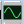
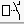
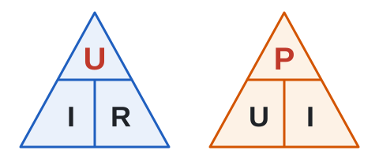

Een schakeling in Logic heeft een voedingskring: een bron (accu) van 0 tot 12 V, eventueel een zekering en een milliampèremeter, een rode + rail voor de invoer en een blauwe − rail (de massa) voor de uitvoer. De poorten en de andere verwerkingsblokken krijgen hun voeding onzichtbaar (zie Waar zijn de plus en de min?). Met de voltmeter meet je de spanning.
Deze knoppen staan in de groep Voeding van de onderdelenbalk; de milliampèremeter en de wattmeter hebben een knop bij de uitvoer, naast de voltmeter.
| Knop | Naam | Wat is het? |
|---|---|---|
 | + rail (voeding) | Rode rail voor de invoer. Bovenaan staat de spanning die hij van de bron krijgt, bijvoorbeeld 5V. |
 | − rail (massa) | Blauwe rail met bovenaan 0V en onderaan het massasymbool. |
 | Bron (accu) | Spanningsbron van 0 tot 12 V. |
 | Wisselspanningsbron | Spanning die als een sinus van richting wisselt (vertraagd: 0,5 tot 2 Hz). |
 | Zekering | Smelt als er te veel stroom loopt. |
 | Milliampèremeter | Meet de stroom die de schakeling verbruikt. |
 | Wattmeter | Meet het vermogen P = U × I van alles wat erachter hangt. |
 | Oscilloscoop | Tekent de spanning in de tijd, als een groen spoor. |
 | Weerstand (contact) | Een contact of draad met een kleine weerstand: er gaat spanning verloren. |
 | Potentiometer | Weerstand met een loper en drie klemmen: een instelbare spanningsdeler. |
 | LDR | Lichtgevoelige weerstand: hoe meer licht, hoe kleiner de weerstand. |
 | NTC | Temperatuurgevoelige weerstand: hoe warmer, hoe kleiner de weerstand. |
 | Lamp | Lamp met twee klemmen, voor 12 V of 5 V; een lamp voor 5 V brandt ook aan een poort. Rechtsklik › Kleur: rood, groen of oranje. |
 | Led met 2 klemmen | Geleidt maar in één richting; hoort met een voorschakelweerstand. |
 | Diode | Laat stroom maar in één richting door, boven 0,7 V. |
 | Condensator | Laadt op en ontlaadt in de tijd. |
 | Schakelaar of drukknop | Schakelaar met twee klemmen; met rechtsklik › Soort › Drukknop wordt het een drukknop. |
 | Wisselschakelaar | Drie klemmen: het midden is verbonden met A of met B. |
 | Impulsgenerator | Schakelaar die vanzelf opent en sluit: pulsen van 0,5 tot 5 Hz. |
 | Dipschakelaar | Vier schakelaartjes: een getal van 0 tot 15 op de uitgangen 8, 4, 2 en 1. |
| Voltmeter met 2 klemmen | Smalle knop met een V in een cirkel. Meet het spanningsverschil tussen zijn twee klemmen. | |
| Transistor | Een kleine basisstroom stuurt een grote collectorstroom: schakelen en versterken. | |
 | Zoemer | Zoemer met twee klemmen: zoemt vanaf 10 mA, ook aan een poort. |
 | Relais | Spoel met twee klemmen en een wisselcontact (C, maak, verbreek). |
 | Staafmagneet | Magneet met een noordpool (rood) en een zuidpool (blauw), zonder klemmen. |
 | Kompas | Een naald die langs het magnetisch veld wijst. |
 | Veldlijnenplaat | Toont de veldlijnen van de magneten die erop liggen, zoals ijzervijlsel. |
 | Spoel | Spoel met windingen in de stroomkring: met stroom wordt ze een magneet. |
 | Spijker | Een stukje ijzer: een magneet of een spoel met stroom trekt het aan. |
 | Relais (open model) | Spoel op een kern, een anker met een veer en drie contacten: zo werkt een relais vanbinnen. |
 | Stroomschommel | Een koperen staafje tussen de polen van een U-magneet: met stroom zwaait het uit (Lorentzkracht). |
 | Elektromotor (model) | Een spoeltje dat tussen twee polen draait, met collector en borstels. |
 | Nulpuntmeter | Galvanometer met de nul in het midden: toont de stroom en zijn richting. |
 | Draaiende magneet | Een sterke magneet op een as, zoals in een dynamo; klik om te laten draaien. |
| Transformator | Twee spoelen op een ijzeren kern: zet een wisselspanning omhoog of omlaag. |
Je mag zoveel rails plaatsen als je wil, bijvoorbeeld een aparte rail per deel van de schakeling.
De rails krijgen hun spanning alleen van een bron. Verbind daarvoor met
 Verbinding:
Verbinding:
Een zekering en een milliampèremeter zet je in serie in de + draad: van de bron naar de bovenste klem van de zekering, van de onderste klem verder naar de meter of naar de + rail.
Is de kring gesloten, dan staat de spanning van de bron op de + rail. Is ze niet gesloten (een draad ontbreekt of de zekering is gesmolten), dan staat de + rail op 0 V: de invoer geeft geen signaal en de uitvoer werkt niet.
De bron (accu)
Elke verbruiker die aan staat, gedraagt zich als een vaste weerstand. Bij 12 V trekt hij:
| Verbruiker (aan) | Stroom bij 12 V |
|---|---|
| lamp (120 Ω) | 100 mA |
| motor (draait) | 200 mA |
| relais met twee klemmen (spoel van 60 Ω) | 200 mA |
| zoemer met twee klemmen (200 Ω) | 60 mA |
| persoon (per ingang die aan staat) | 20 mA |
| 7-segmentdisplay | 10 mA per segment dat brandt |
| poort, teller, geheugen, LogicRun, ingeplugde invoer | 1 mA |
| in oude panelen, zonder klemmen: relais of schakelrelais, zoemer, gekleurde led | 40 mA, 30 mA, 20 mA |
Bij een lagere spanning is de stroom evenredig kleiner: een lamp trekt bij 6 V 50 mA. De stroom van de bron is de som van alle verbruikers samen. Met de inwendige weerstand Ri van de bron wordt dat:
I = E / (Ri + R) en U = E − I × Ri
R is de weerstand van alle verbruikers samen (parallel). Hoe meer verbruikers aan staan, hoe groter de stroom en hoe meer de klemspanning U zakt. Lampen en leds branden feller naarmate de spanning van de voeding hoger is.
Bij elektriciteit komen vier grootheden telkens terug:
| Grootheid | Symbool | Eenheid |
|---|---|---|
| spanning | U | volt (V) |
| stroom | I | ampère (A); 1 A = 1000 mA |
| weerstand | R | ohm (Ω) |
| vermogen | P | watt (W) |
De wet van Ohm verbindt spanning, stroom en weerstand. Ken je er twee, dan reken je de derde uit. Het vermogen is spanning maal stroom. De driehoeken helpen om de formule te vinden:

| Je zoekt | Formule | Voorbeeld |
|---|---|---|
| spanning | U = I × R | 0,1 A × 120 Ω = 12 V |
| stroom | I = U / R | 6 V / 120 Ω = 0,05 A = 50 mA |
| weerstand | R = U / I | 12 V / 0,1 A = 120 Ω |
| vermogen | P = U × I | 12 V × 0,1 A = 1,2 W |
| vermogen (met R en I) | P = I × I × R | 0,240 A × 0,240 A × 10 Ω = 0,58 W |
| vermogen (met U en R) | P = U × U / R | 6 V × 6 V / 120 Ω = 0,3 W |
Een lamp trekt bij 12 V een stroom van 100 mA. Haar weerstand is R = U / I = 12 V / 0,1 A = 120 Ω en haar vermogen P = U × I = 12 V × 0,1 A = 1,2 W.
Zet je de bron op 6 V, dan blijft de weerstand 120 Ω. De stroom wordt I = U / R = 6 V / 120 Ω = 0,05 A en het vermogen P = U × I = 6 V × 0,05 A = 0,3 W. De halve spanning geeft de halve stroom, maar slechts een kwart van het vermogen. Daarom geeft een lamp op halve spanning zoveel minder licht.
Schuif de spanning van de bron. Bij 0 V staan de elektronen stil: ze zitten altijd in de draad, maar niets duwt ze. Hoe hoger de spanning, hoe harder de bron duwt: er schuiven meer elektronen per seconde door de draad, de stroom I wordt groter en de lamp brandt feller. Het vergrootglas toont een stukje koperdraad: de grijze koperatomen blijven op hun plaats, de blauwe elektronen schuiven verder.
De wisselspanningsbronEen wisselspanningsbron werkt zoals de bron, maar haar spanning wisselt als een sinus van richting: de ene klem is beurtelings + en dan −. Met de schuifregelaar stel je de topwaarde in (0 tot 12 V); het display toont de spanning van dit ogenblik, met teken. Het lichtnet wisselt 50 keer per seconde (50 Hz), te snel om te zien. Daarom loopt de bron hier vertraagd: rechtsklik › Frequentie 0,5, 1 of 2 Hz. De tijd loopt alleen tijdens de simulatie.
De zekeringEen zekering beschermt de kring: wordt de stroom groter dan de nominale stroom, dan smelt het draadje. Er komt een rood kruis op en de + rail valt terug op 0 V.
De milliampèremeterDe milliampèremeter meet de stroom die door de kring loopt, in mA. Zet hem in serie in de + draad, tussen de bron (of de zekering) en de + rail: de draad komt links binnen en gaat rechts verder. Een meter die niet in een gesloten kring zit, toont 0.
De wattmeterDe wattmeter meet het vermogen in watt, zoals een meetstekker tussen het stopcontact en een toestel. Zet hem in serie, net als de milliampèremeter: de draad komt links binnen en gaat rechts verder. Hij meet de stroom door de meter en de spanning van zijn uitgang tot de − van de bron, en toont P = U × I: het vermogen van alles wat achter de meter hangt. Zet je hem tussen twee lampen in serie, dan meet hij alleen de lamp erna. Zie les 32.
Een oscilloscoop is een voltmeter die schrijft: hij tekent de spanning tussen zijn + klem (links) en − klem (rechts) in de tijd, als een groen spoor. De nieuwste meting staat rechts; in het midden loopt de nullijn, boven de nullijn is de spanning positief, eronder negatief. Hij neemt geen stroom en meet alleen tijdens de simulatie. Rechtsklik › Bereik (± 5 of ± 12 V), Tijdbasis (2, 4 of 8 s over het hele scherm) of Scherm wissen. Zo zie je bijvoorbeeld de sinus van een wisselspanningsbron, en wat er van overblijft achter een diode.
De weerstand (contact)Elke draad en elk contact heeft een kleine weerstand. Loopt er stroom door, dan gaat er een stukje spanning verloren: de spanningsval U = I × R. Dat stukje spanning komt niet bij de verbruikers aan, en het contact wordt warm: P = I × I × R.
Zet de weerstand in serie in de + draad (of de − draad), net als de milliampèremeter: de draad komt links binnen en gaat rechts verder. Rechtsklik › Soort:
| Soort | Weerstand | Waar zie je dat? |
|---|---|---|
| goed contact | 0,05 Ω | een stevig vastgeschroefde klem |
| lange dunne draad | 1 Ω | een te dunne kabel naar een verre lamp |
| slecht contact | 2 Ω | een losse of geoxideerde klem (standaard) |
| verbrand contact | 10 Ω | een klem die te warm geworden is |
| voorschakelweerstand | 100, 220, 470, 1000 Ω, 2,2, 4,7, 10, 47 of 100 kΩ | een echte weerstand, bv. in serie met een led of voor de basis van een transistor |
Vormt de weerstand samen met een LDR of NTC een spanningsdeler (ze delen een klem waar geen rail of bron op zit), dan staat er spanningsdeler onder in plaats van voorschakelweerstand. De spanning tussen de twee verandert dan met het licht of de temperatuur, en die stuurt een poort of transistor. Zie les 6 en les 40.
Het blokje kleurt oranje tot rood naarmate het warmer wordt. Meet de spanningsval met een voltmeter: + aan de klem aan de kant van de bron, − aan de andere klem. Zie les 24.
In de groep Voeding van de onderdelenbalk staan ook drie onderdelen met twee klemmen. Daarmee bouw je zelf een kring met lampen in serie of parallel, zonder rails. Logic rekent de hele kring uit met de wetten van Kirchhoff: de spanning op elke klem en de stroom door elk onderdeel.
Wil je twee draden op dezelfde klem? Klik op Verbinding en daarna op de klem, ook als er al een draad op zit: er begint een nieuwe draad. Zie les 25.
De wisselschakelaarEen wisselschakelaar heeft drie klemmen: het midden (onderaan) en de contacten A (links) en B (rechts). De hendel draait in het midden en maakt altijd contact met A of met B; elke klik wisselt. Hij is dus nooit helemaal open: de stroom kiest alleen een andere weg. Je kunt hem draaien zoals de andere onderdelen.
Met twee wisselschakelaars maak je de schakeling van een trap of een lange gang: je zet het licht aan en uit vanaf twee plaatsen. Het midden van de ene komt van de + rail, het midden van de andere gaat naar de lamp, en daartussen verbind je A met A en B met B. De lamp brandt als beide schakelaars op dezelfde letter staan; zet je er een om, dan verandert de lamp altijd, waar de andere ook staat.
 De impulsgenerator
De impulsgeneratorEen schakelaar die vanzelf opent en sluit, zoals een knipperrelais. Zet hem tussen de + rail en een ingang (een teller, een lamp of een poort): hij geeft pulsen van de volle spanning. Met rechtsklik › Frequentie kies je 0,5 tot 5 Hz. Klik op het kastje om hem aan of uit te zetten (ook tijdens de simulatie); hij begint uitgeschakeld. In het kastje zie je het contact open en dicht gaan.
De dipschakelaarVier kleine schakelaars in één kastje, met vijf klemmen: links de gemeenschappelijke klem, die je met de + rail verbindt, rechts de uitgangen 8, 4, 2 en 1. Klik op een schuifje om het om te zetten: staat het aan (rood), dan staat de volle spanning op die uitgang. Onderaan zie je het getal (0 tot 15).
 De potentiometer
De potentiometerEen potentiometer is een weerstand met een loper: een contact dat je over de weerstand schuift. Hij heeft drie klemmen: de uiteinden A (links) en B (rechts), en de loper L (onderaan). Tussen A en B staat altijd de hele weerstand; de loper verdeelt die in twee stukken: R(A–L) = R × stand en R(L–B) = R × (100 % − stand).
Sleep de blauwe schuifknop met de muis, van 0 tot 100 %. Rechtsklik › Waarde: 470 Ω, 1 kΩ, 4,7 kΩ of 10 kΩ. Hang je A aan de + en B aan de −, dan staat er op de loper U × (100 % − stand): een instelbare spanningsdeler. Zie les 33.
De led met twee klemmenEen led (lichtgevende diode) is geen lamp: ze laat de stroom maar in één richting door, van de + klem (anode, links) naar de − klem (kathode, rechts). En ze begint pas te geleiden boven haar drempelspanning: rood 1,8 V, geel 2,0 V, groen 2,2 V, blauw 3,0 V (rechtsklik › Kleur).
Boven de drempel stijgt de stroom heel snel. Een led brandt vol bij 20 mA en is kapot boven 30 mA. Sluit je ze rechtstreeks op 12 V aan, dan gaat ze meteen stuk (rechtsklik › Led vervangen). Daarom zet je er altijd een voorschakelweerstand in serie mee (de weerstand, soort voorschakelweerstand). Die neemt de rest van de spanning op:
R = (Ubron − Uled) / I = (12 V − 1,8 V) / 0,020 A = 510 Ω → neem 470 Ω
Draai je de led om, dan blijft ze uit: er loopt geen stroom, en de voltmeter toont de volle spanning over de led.
De diodeEen diode laat stroom maar in één richting door: van de anode A (links) naar de kathode K (rechts, bij de streep). In die richting geleidt ze boven 0,7 V, en dan blijft er ongeveer 0,7 V over de diode staan. Omgekeerd spert ze: er gaat geen stroom door, ook niet bij 12 V. Geleidt ze, dan kleurt de driehoek zalmrood; spert ze, dan is hij grijs. Een diode verdraagt tot 1 A; daarboven gaat ze kapot (rechtsklik › Diode vervangen). Met rechtsklik › Omdraaien wisselen A en K van kant, zonder de draden los te maken.
De condensatorEen condensator slaat lading op, een beetje zoals een kleine oplaadbare batterij. Staat er spanning op, dan laadt hij op; haal je de bron weg, dan geeft hij de lading weer af en ontlaadt hij. Dat gaat niet in één keer: hoe groter de condensator en hoe groter de weerstand, hoe langer het duurt. De tijdconstante is
τ = R × C (bv. 1000 Ω × 1000 µF = 1 s)
Na τ seconden is de condensator voor ongeveer 63 % op- of ontladen, na 5 τ zo goed als helemaal. De + klem staat links. Het blauwe vlak tussen de platen toont hoe vol hij is, en onder het symbool staat zijn spanning. Rechtsklik › Capaciteit: 100, 470, 1000, 2200 of 4700 µF; Ontladen maakt hem leeg.
De LDR (lichtgevoelige weerstand)Een LDR (Light Dependent Resistor) is een weerstand die kleiner wordt naarmate er meer licht op valt. Met de schuifknop onderaan regel je het licht van 0 tot 100 %; het schermpje onderaan toont het licht, het blokje de weerstand. Het knopje kleurt van grijs (donker) naar geel (fel licht).
| Licht | 0 % | 25 % | 50 % | 75 % | 100 % |
|---|---|---|---|---|---|
| Weerstand | 1 MΩ | 100 kΩ | 10 kΩ | 1 kΩ | 100 Ω |
Elke 25 % meer licht maakt de weerstand tien keer kleiner. Met een vaste weerstand erbij maak je een spanningsdeler waarvan de spanning met het licht verandert; met een transistor wordt dat een nachtlampje. Zie les 40.
De NTC (temperatuurgevoelige weerstand)Een NTC (Negatieve TemperatuurCoëfficiënt) is een weerstand die kleiner wordt naarmate hij warmer wordt. Met de schuifknop regel je de temperatuur van 0 tot 100 °C, af te lezen op het schermpje; het knopje kleurt van blauw (koud) naar rood (warm).
| Temperatuur | 0 °C | 25 °C | 50 °C | 75 °C | 100 °C |
|---|---|---|---|---|---|
| Weerstand | 33,6 kΩ | 10 kΩ | 3,6 kΩ | 1,5 kΩ | 0,7 kΩ |
Zo’n NTC zit in thermometers, in de laadkabel van een batterij en in een verwarmingsketel. Met een vaste weerstand en een transistor maak je er een temperatuuralarm mee: zie les 41.
Een transistor heeft drie klemmen: de collector C (boven), de basis B (links) en de emitter E (onder). Een kleine stroom in de basis stuurt een veel grotere stroom van de collector naar de emitter. Hoeveel groter, zegt de versterkingsfactor β (bèta):
Ic = β × Ib (bv. 100 × 0,11 mA = 11 mA)
Rechts naast het symbool staan de soort, β, de toestand en de stromen Ib en Ic. De transistor is altijd in één van drie toestanden:
| Toestand | Wanneer? | Wat gebeurt er? |
|---|---|---|
| spert (grijs) | minder dan 0,7 V tussen B en E | geen basisstroom en dus ook geen collectorstroom: een open schakelaar |
| versterkt (oranje) | er loopt basisstroom | Ic = β × Ib: een kleine verandering in de basis geeft een grote in de collector |
| verzadigd (groen) | de rest van de kring laat minder door dan β × Ib | de transistor staat helemaal open; tussen C en E staat maar ongeveer 0,2 V: een gesloten schakelaar |
Rechtsklik › Soort: NPN of PNP. Bij een NPN gaat de stroom de basis in en loopt hij van C naar E; de emitter hangt aan de −. Bij een PNP is alles omgekeerd: de emitter hangt aan de +, de stroom komt uit de basis en loopt van E naar C. De pijl in de emitter wijst de richting van de stroom aan. Rechtsklik › Versterking: β = 50, 100 of 200.
Zet altijd een weerstand voor de basis (bv. 10 kΩ): tussen B en E zit een diode die boven 0,7 V bijna geen weerstand heeft. Zonder weerstand loopt er zoveel basisstroom dat de transistor kapot gaat (boven 100 mA basisstroom of 1 A collectorstroom); rechtsklik › Transistor vervangen. Zie les 38 en les 39.
Weerstand, lamp, led, diode, condensator, schakelaar en zekering kun je een kwartslag draaien: rechtsklik › Draaien. Een liggend onderdeel komt dan rechtop te staan (de linkerklem boven, de rechterklem onder), de zekering komt te liggen. Draai je nog eens, dan staat het weer zoals eerst. De draden aan de klemmen gaan mee, en de stroom en de spanning blijven gelijk. Zo teken je een kring als een rechthoek, en takken die parallel staan naast elkaar tussen twee draden, zoals in een schoolboek. De stand wordt mee opgeslagen. Een vergrendeld onderdeel kun je niet draaien.
Meters, bronnen, de oscilloscoop, de potentiometer en de transistor draaien niet: hun scherm of schuifknop moet leesbaar blijven.
Zolang er geen enkele rail op het paneel staat, werkt alles zoals vroeger. Staat er minstens één rail, dan moeten invoer en uitvoer zonder klemmen ingeplugd zijn:
De onderdelen met twee klemmen (schakelaar, lamp, zoemer, relais …) plug je niet in. Je verbindt ze met draden: van de + rail naar de linkse klem van de schakelaar, en van de rechtse klem van de lamp, de zoemer of de spoel van het relais naar de − rail. Zie lamp, schakelaar en voltmeter met twee klemmen.
In plaats van in te pluggen kan je een onderdeel ook met een draad op een rail aansluiten: zie Aansluiten met een voedingsdraad.
Een ingeplugd onderdeel krijgt een dunne stekker met een bolletje in de kleur van de rail. Een onderdeel dat niet ingeplugd is, krijgt een grijs bolletje en werkt niet: invoer geeft geen signaal, uitvoer blijft uit en een display blijft donker.
De verwerking (poorten, teller en geheugen) plug je niet in: die krijgt haar voeding nog altijd onzichtbaar.
De zoemer met twee klemmenEen zoemer van 200 Ω met twee klemmen: links in, rechts uit (meestal naar de − rail). Hij zoemt zodra er minstens 10 mA door loopt. Aan de uitgang van een poort (5 V) loopt er ongeveer 20 mA, dus een poort kan hem rechtstreeks sturen. Zie les 5.
Een relais in schemasymbool: een schakelaar die door een elektromagneet bediend wordt.
Spoel en contact zijn elektrisch gescheiden: het contact mag in een andere kring hangen, met een andere bron. Het relais werkt ook in de waarheidstabel: daar telt het als 1 als het aangetrokken is. Zie les 11; hoe een relais vanbinnen werkt, zie je in Magnetisme 4.
Magnetisme: staafmagneet, kompas, veldlijnenplaat, spoel, spijker, relais, stroomschommel, elektromotor, nulpuntmeter, draaiende magneet en transformatorDe staafmagneet, het kompas en de veldlijnenplaat hebben geen klemmen: ze horen niet bij de stroomkring. Je zet ze los op het paneel en sleept ze rond. Zie Wat is magnetisme?
Staafmagneet: de noordpool N is rood, de zuidpool Z blauw. Rechtsklik: Omdraaien (N en Z wisselen) of Draaien (liggend of rechtop). Komt een tweede magneet dichtbij, dan toont een gele pijl de kracht: ongelijke polen trekken aan, gelijke polen stoten af.Kompas: de rode punt is de noordpool van de naald. Ze wijst langs het veld op haar plaats, weg van een noordpool en naar een zuidpool. Zonder magneet in de buurt wijst ze naar het noorden van de aarde: boven op het paneel. De hint zegt hoeveel sterker het veld van de magneten er is dan dat van de aarde.Veldlijnenplaat: een blad dat altijd onder de magneten ligt. Het tekent de veldlijnen van alle magneten, zoals ijzervijlsel op papier: buiten de magneet van N naar Z, dicht bij elkaar waar het veld sterk is. Rechtsklik: Maat (klein, middel of groot).Spoel (solenoïde): die heeft wel twee klemmen en hoort in de stroomkring, als een kleine weerstand (2, 4 of 8 Ω). Loopt er stroom door, dan wordt ze een magneet, met een veld zoals dat van een staafmagneet; onder de spoel verschijnen N en Z. Een stroom die links binnenkomt, maakt rechts een noordpool. Rechtsklik: Windingen (100, 200 of 400), IJzeren kern (vijf keer sterker), Andersom gewikkeld (N en Z wisselen) of Draaien. De sterkte is evenredig met de stroom en het aantal windingen; de hint toont ze. Zie Magnetisme in een spoel.
Spijker (ijzer, zonder klemmen): een magneet of een spoel met stroom trekt hem aan zodra het veld sterk genoeg is. Dan schuift hij naar de pool tot hij de magneet, de spoel of een andere spijker raakt, en daar blijft hij hangen, ook als de stroom uitgaat. De hint zegt hoeveel procent van de nodige kracht er op zijn plaats is. Rechtsklik: Terugleggen (naar de plaats waar je hem neerlegde) of Draaien. Zie De kracht van een spoel.
Relais (open model): een spoel van 120 Ω op een ijzeren kern (klemmen onderaan), een anker op een scharnier met een veer, en drie contacten: rechts het gemeenschappelijke contact C, links het maakcontact (onder) en het verbreekcontact (boven). Vanaf 35 mA door de spoel trekt de kern het anker aan: eerst gaat het verbreekcontact open, dan het maakcontact dicht. Zet je de spoel in serie met het eigen verbreekcontact, dan trilt het anker: een elektrische bel. Zie De elektromagneet aan het werk.
Stroomschommel: een koperen staafje hangt tussen de polen van een U-magneet; je kijkt er van opzij naar. De twee klemmen zitten bovenaan; rechts staat een schuin tekeningetje van het staafje in de magneet; de stroom van de linkse naar de rechtse klem gaat het scherm in (kruisje). Loopt er stroom, dan duwt de Lorentzkracht het staafje opzij (gele pijl), verder naarmate de stroom groter is. Rechtsklik: Magneet omdraaien of Sterke magneet (dubbel zo sterk veld). Zie De Lorentzkracht.
Elektromotor (model): links het vooraanzicht langs de as, met de noordpool links, de zuidpool rechts, een spoeltje met twee draden (kruisje of stip) en in het midden de collector met twee borstels; rechts een schuin tekeningetje. Elektrisch een weerstand van 4 Ω; de klemmen zitten bovenaan. Met stroom draait het spoeltje; het toerental staat eronder. Rechtsklik: Magneet omdraaien of Collector (uitvinken: dan blijft het spoeltje rechtop staan). Zie De elektromotor.
Nulpuntmeter (galvanometer): een stroommeter in serie, elektrisch 1 Ω, met de nul in het midden. Loopt de stroom van de linkse naar de rechtse klem, dan slaat de naald naar rechts uit, andersom naar links. Rechtsklik: Bereik (10 mA, 100 mA of 1 A). Inductie: verandert het magnetisch veld door een spoel (een magneet die erin of eruit beweegt), dan wekt de spoel zelf een spanning op; de hint van de spoel toont ze. Zie Inductie.
Draaiende magneet (dynamo, zonder klemmen): een sterke staafmagneet in een rond huisje, die rond zijn midden draait. Klik erop: draaien of stilstaan. Rechtsklik: Toerental (30, 60, 120 of 240 omw/min). Leg er een spoel naast: die wekt dan een wisselspanning op. Zie De dynamo.
 Transformator: twee spoelen op een ijzeren kern, links de primaire (klemmen boven en onder), rechts de secundaire. Bij wisselspanning is U2 = N2 / N1 × U1, en de primaire stroom volgt wat de secundaire kring vraagt. Bij gelijkspanning geeft de secundaire niets en is de primaire een weerstand van 40 Ω. De twee kringen zijn elektrisch gescheiden. Rechtsklik: Primaire windingen en Secundaire windingen (50 tot 800). Zie De transformator.
Transformator: twee spoelen op een ijzeren kern, links de primaire (klemmen boven en onder), rechts de secundaire. Bij wisselspanning is U2 = N2 / N1 × U1, en de primaire stroom volgt wat de secundaire kring vraagt. Bij gelijkspanning geeft de secundaire niets en is de primaire een weerstand van 40 Ω. De twee kringen zijn elektrisch gescheiden. Rechtsklik: Primaire windingen en Secundaire windingen (50 tot 800). Zie De transformator.
Logic rekent het veld uit met twee polen per magneet: elke pool geeft een veld dat afneemt met het kwadraat van de afstand. Dat is niet helemaal exact, maar de vorm van de veldlijnen en de richting van het kompas kloppen.
In plaats van een onderdeel in te pluggen, kan je het ook met een draad op een rail aansluiten, zoals in een echte schakeling. Het onderdeel mag dan overal op het paneel staan.
Verbinding.Het bolletje krijgt de kleur van de rail en het onderdeel werkt. Een draad van een + rail wordt tijdens de simulatie rood als er genoeg spanning op staat; een draad naar een − rail is blauw.
De + rail krijgt de klemspanning van de bron waarmee hij verbonden is. Net als bij echte logische schakelingen werkt een ingang pas vanaf ongeveer 2 V.
| Spanning | Rail | Invoer op deze rail |
|---|---|---|
| 0 V (geen gesloten kring) | grijs | geeft geen signaal |
| onder 2 V | donkerrood | geeft geen signaal: te weinig spanning |
| 2 V tot 12 V | rood, feller naarmate de spanning hoger is | werkt |
 Voltmeter
VoltmeterDe voltmeter staat in de onderdelenbalk. Wil je hem verbergen, zet dan bij Instellingen, tabblad SchakelElementen, Voltmeter op False.
De voltmeter meet de spanning tegenover de massa (0 V) en toont ze met één decimaal, in het rood zodra er spanning is.
Een draad brengt de spanning van zijn bron mee:
| Bron | Spanning op de draad |
|---|---|
| invoer op een + rail, aan | de spanning van die rail |
| draad die op een + rail begint | de spanning van die rail |
| invoer zonder rails op het paneel, aan | 5 V |
| poort, teller of geheugen, uitgang aan | 5 V |
| alles wat uit staat | 0 V |
.lpl) bewaard. Een gesmolten zekering is na het openen weer heel.